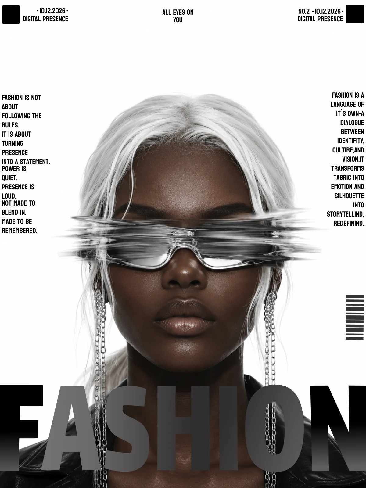
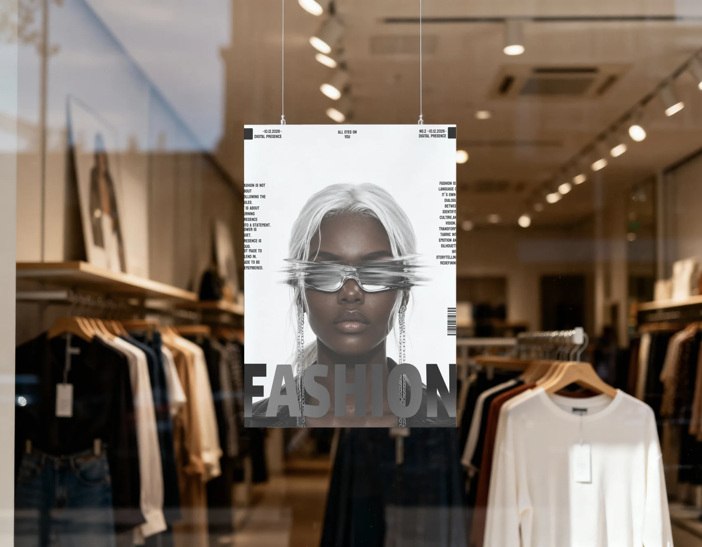
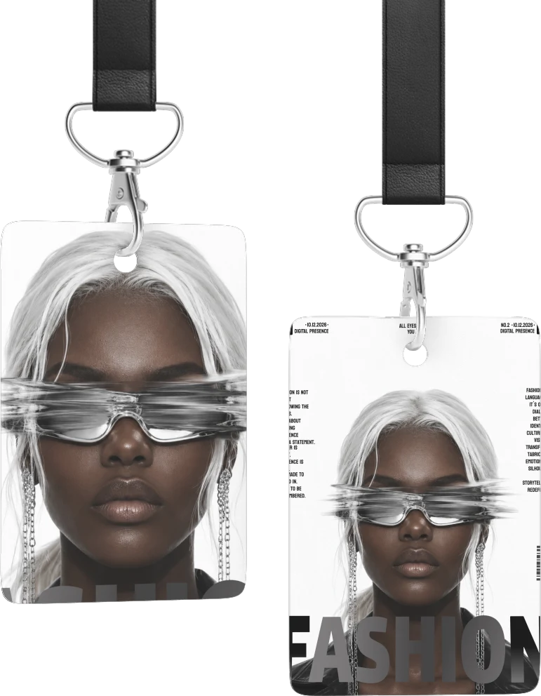
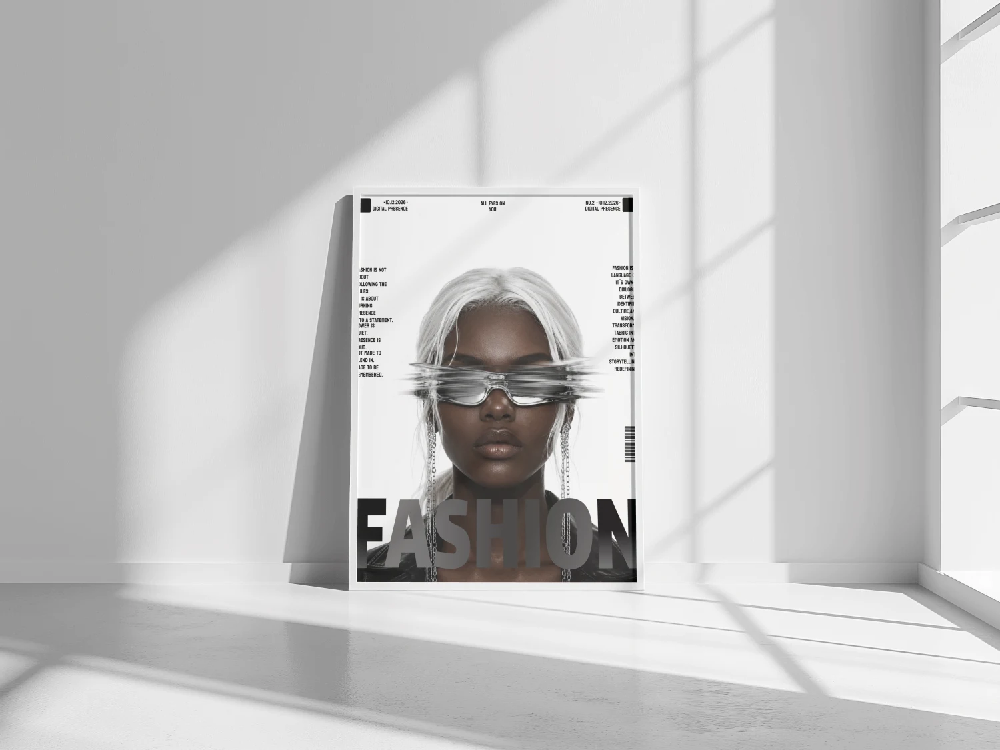

FASHION — Digital Presence
Имиджевый fashion-постер в журнальной эстетике, выпуск «Digital Presence» — «All eyes on you».

- Клиент
- Концепт fashion-издания FASHION, выпуск № 2 «Digital Presence»
- Задача
- Собрать имиджевый постер в эстетике журнальной обложки для выпуска «Digital Presence» (10.12.2026): образ должен работать одновременно как обложка, как витринный постер и как интерьерная печать, удерживая идею «All eyes on you».
- Роль
- Графический дизайнер: композиция, типографика, обработка и ретушь фотографии, сборка мокапов применения.
Постер намеренно построен по канону журнальной обложки, а не рекламного макета: верхняя строка с датой и номером выпуска, слоган по центру, две узкие текстовые колонки по краям и штрихкод в правом нижнем поле. Эти маркеры обычно воспринимаются как служебные, но здесь они и есть рамка композиции — портрет вырезан в белое поле без фона, поэтому текст по краям держит формат и не даёт кадру расплыться.
Смысловой центр — «смазанные» очки: горизонтальный водяной сдвиг закрывает глаза модели ровно по линии взгляда. Отсюда двойное прочтение слогана «All eyes on you» — смотрят на тебя, но глаз не видно. Крупное «FASHION» внизу набрано полупрозрачным градиентом от чёрного к серому и заходит на плечи и шею, из-за чего буквы и фигура читаются как один слой, а не как подпись поверх фотографии. Вся палитра — монохром, единственная «цветная» деталь — блики хрома на очках и цепочках.



Макет масштабируется от бейджа-пропуска до витринного постера и интерьерной печати: обложечная рамка из текстовых колонок и крупный логотип на нижней трети остаются узнаваемыми даже там, где мелкий текст уже не читается.